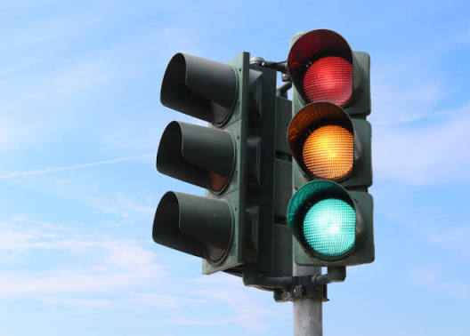
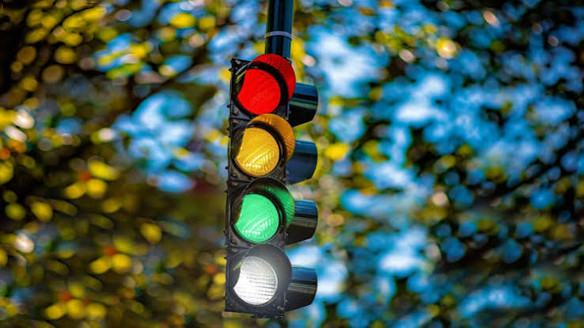
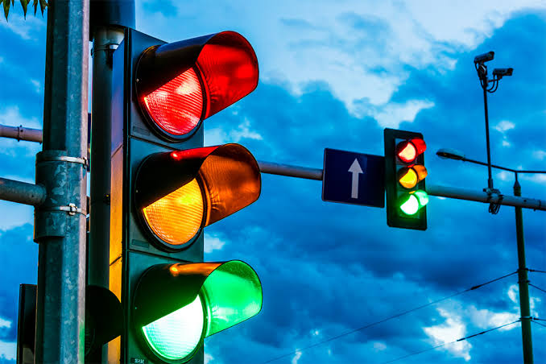
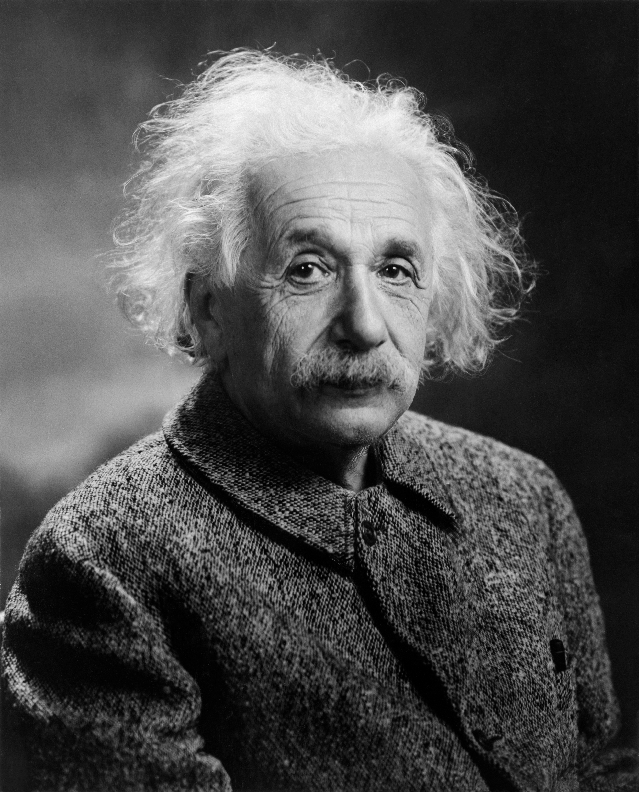

03 / Contemporary Cross-Curricular Themes
Science & technology
How digital technologies transform tasks, relationships, and public spaces.
Our group's theme
Use of new digital technologies
Science investigates phenomena and produces knowledge; technology turns some of that knowledge into tools and solutions. Together, they support advances in medicine, transportation, communication, and food production.
Everyday life
Convenience and responsibility
Banking apps, digital maps, instant communication, and online services help organize routines and provide quick access to information. Using these tools also calls for attention to security, privacy, inclusion, and critical evaluation of information.
Artificial intelligence
Systems that learn from data
Artificial intelligence brings together methods that allow systems to identify patterns, process language, and support decisions. Outcomes depend on the data and the choices made by the people who build and use these tools, so transparency, human oversight, and responsible use matter.
Technology in our town
Mobility and information in Nova Santa Rosa
Smart traffic lights
A smart traffic light can use sensors and control systems to adjust signal timing to traffic conditions. Compared with fixed timers, this technology may help manage traffic flow, but it requires planning, maintenance, and accessibility for pedestrians.

Local observation
According to information collected by the students, Nova Santa Rosa has no traffic lights and has a digital display in the town square showing the time and weather. This local example shows one way information technology appears in public space. Further research with the city government could identify other local initiatives related to this theme.
Project visuals
Image gallery
Scroll horizontally or use the shortcuts to browse the images.





Video about the topic
Smart traffic lights and urban mobility
The project should include a group-produced video or an audiovisual reference related to the topic. The link below opens search results; replace it with a specific video selected and reviewed by the group.
Find videos about the topic